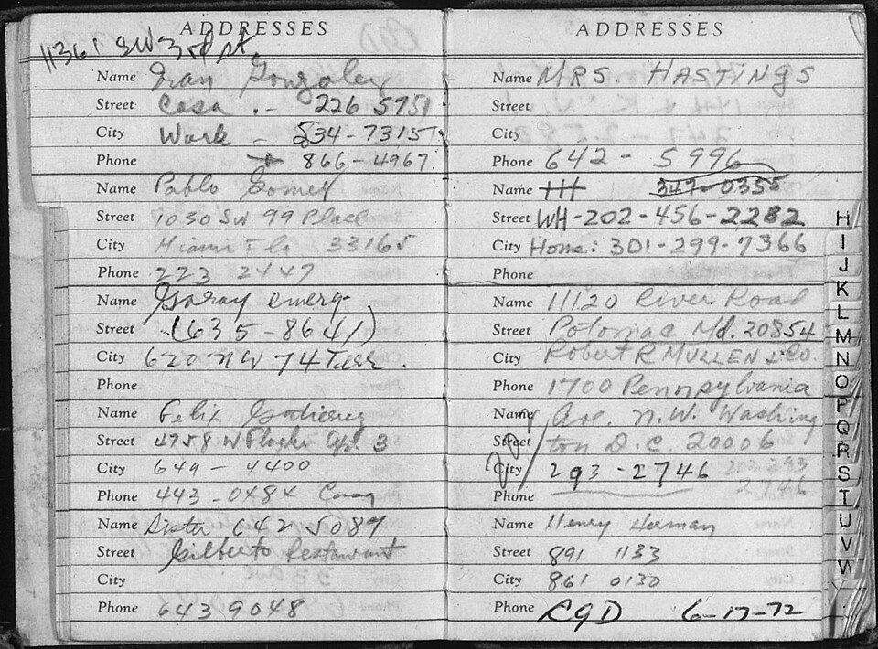

A42-POL-048 // HISTORICAL CLAIM REVIEW
Watergate: The Break-In and Cover-Up
Assessment: A political burglary and high-level cover-up are established beyond reasonable historical dispute.


The precise allegation
Watergate began with a 1972 break-in at Democratic Party headquarters by operatives connected to President Nixon's reelection campaign. The subsequent cover-up involved senior campaign and White House figures and is documented through convictions, Senate testimony, recordings, and Nixon's resignation. Disputes concern knowledge and timing among individuals, not whether a political conspiracy and obstruction occurred.
Chronology and political context
Burglars were arrested at the Watergate complex in June 1972. Investigative reporting, court proceedings, and a Senate committee traced links to the Committee to Re-elect the President. Nixon's secret recordings exposed efforts to impede the FBI investigation. The Supreme Court ordered their release; Nixon resigned in August 1974, and multiple officials were convicted or pleaded guilty.
Primary historical record
The Senate Watergate Committee hearings, criminal indictments, trial records, White House tapes, and Supreme Court decision in United States v. Nixon are primary evidence. They establish the break-in and obstruction attempts. The tapes are unusually direct but incomplete; portions were erased, and participants' testimony sometimes minimized their own roles.
Corroboration and contrary evidence
The criminal convictions and recorded conversations independently corroborate a campaign-connected operation and cover-up. Historians debate when Nixon learned details of the burglary and how directly he authorized it. The tapes show obstruction and misuse of presidential power, while the evidence for Nixon's knowledge before the break-in is less definitive than his post-arrest involvement.
What remains uncertain
The full participant network and all campaign dirty tricks are difficult to reconstruct because records were destroyed and witnesses negotiated immunity. The term Watergate sometimes conflates separate operations. A precise assessment distinguishes the initial burglary, the broader campaign's political sabotage, and the administration's later obstruction rather than treating them as a single fully coordinated master plan.
Calibrated verdict
A political burglary and high-level cover-up are established beyond reasonable historical dispute. Nixon's recorded conduct makes his obstruction role clear, although the extent of pre-break-in knowledge remains a narrower question. Watergate was not merely a media scandal; it involved criminal acts, abuse of executive power, and demonstrable efforts to frustrate investigation.
What evidence could change this assessment
Any remaining White House recordings, campaign documents, or independently corroborated testimony about Nixon's prior authorization could refine responsibility for the burglary itself. Evidence would need to distinguish pre-event planning from the well-documented cover-up. A complete archive of campaign operations could also clarify the operation's relationship to other political sabotage.
Sources and source limits
- U.S. Senate — Select Committee on Presidential Campaign Activities recordsOfficial committee history and records link; congressional summaries are selective, while hearing transcripts offer primary evidence.
- National Archives — Watergate and the Nixon resignationFederal records and archival guide document investigations; records span agencies and are not a single complete narrative.
- U.S. Supreme Court — United States v. Nixon, 418 U.S. 683Primary judicial opinion establishes the subpoena dispute and executive privilege ruling; not a full historical account of the conspiracy.